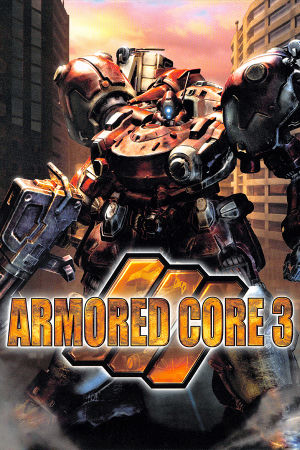

PlayStation 2, PlayStation Portable
Originally released in Japan on April 4th, 2002, and later published in North America by Agetec (September 2002) and in Europe by Metro3D (May 2003), Armored Core 3 is a mech action game developed by FromSoftware for the PlayStation 2. It acts as a soft reboot of the franchise, returning to a post-apocalyptic setting while retaining the core mercenary mission structure of the original. Players pilot a customizable Armored Core through missions set in Layered, a vast underground city where humanity has fled after a catastrophic surface war, overseen by a powerful AI known as The Controller. Gameplay centers on completing missions for credits, then spending earnings on an extensive range of parts: heads, cores, arms, legs, boosters, generators, and a large arsenal of weapons, letting players fine-tune their mech's speed, armor, and firepower to suit their play style.
The game was praised for refining the series' mission structure, offering sharper controls and a more coherent story than earlier entries, and it is often regarded as one of the high points of the classic Armored Core era on PS2. Armored Core 3 spawned a direct sequel in Silent Line: Armored Core (2003), followed by the arena spin-offs Nexus and Nine Breaker, and a narrative conclusion in Last Raven (2005), all sharing the same continuity. Additioanlly, FromSoftware released Armored Core 3 Portable for the PlayStation Portable, first in Japan on July 30th, 2009, and later in North America (October 2009) and Europe (May 2010), bringing the classic experience to a new audience with widescreen support, a weapon drop feature, and ad-hoc multiplayer.
FromSoftware
- Official developer website.
Armored Core Wiki
- Contains lots of useful information about Armored Core games.
PCSX2 - The best PS2
emulator.
PPSSPP - The best PSP
emulator.
Armored Core 3 Manual (JP, PS2)
- PDF copy of the PS2 manual in Japanese.
Armored Core 3 Portable Manual (JP, PSP)
- PDF copy of the PSP manual in Japanese.
Analog Controls Mod
- A mod that allows AC3 to properly utilize dual analog stick controls.
Steam Grid DB (AC3) - Contains lots of cool options for artwork that can be used in your Steam library.